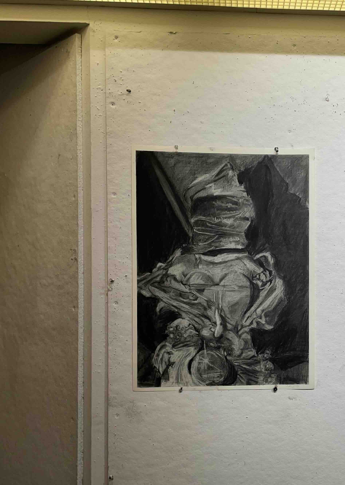
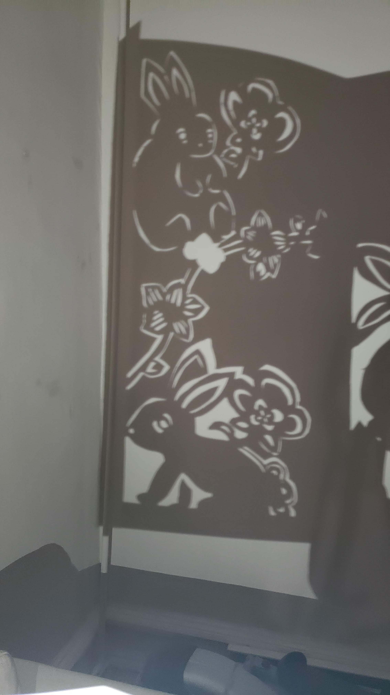

Traditional art has been celebrated dating back to the prehistoric eras where clawing on walls used for storytelling were preserved and marveled at. Da Vinci, Michelangelo, and Raphael, pillars of the Renaissance, are treated as Gods in their works in the art world. “Real” art describes the traditional mediums of painting, sculpture, mixed media, etc;
Art is molded by society; culture, social changes, technological advancements are all things that impact what art looks like. It will not always be a painted acrylic still-life.
2023 Oct. 30 Gestalt Theory
Study on positive and negative spaces
Notan cut-out, inspired by the film Tetro by Francis Ford Coppola.
2024 June 7 Studio Final

Still life: charcoal study
VSST final inspired by Katherine Bradford
2023 Jan. 30 Lunar New Year Lantern

Paper Sculpture
Inspired by Chinese paper cutting method 剪紙 (Jianzhi)
2023 June 7 No Arena Sign
Acrylic
Protest poster depicting Philadelphia Chinatown’s Friendship Arch